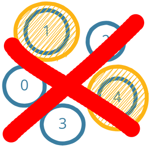

Distributed Systems Verification Goal Example
Ring System Definition (Verification Assumptions)
:
The set of node identifiers is an
unknown
subset of the natural numbers
Payloads are natural numbers
Nodes can perform the following actions:
Send their own identifier left
Receive a message and,
if the payload is greater than their own identifier, send the payload left;
if the message is their own identifier, move to a winning state
Initially, no node is in the winning state and the message buffer is empty
Ring System Specification (Verification Goal)
:
There is always at most one node in the winning state
